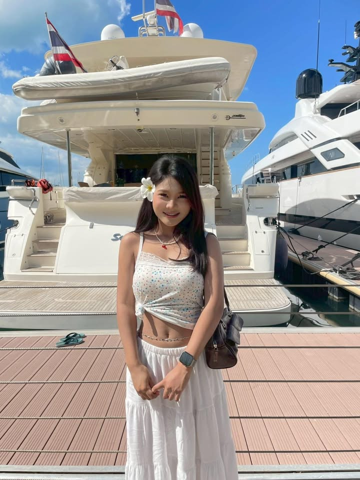

แฟ้มสะสมผลงาน (Portfolio) เล่มนี้ จัดทำขึ้นเพื่อรวบรวมและนำเสนอประวัติ ความรู้ ทักษะ ความสามารถ ตลอดจนผลงานและกิจกรรมต่าง ๆ หวังเป็นอย่างยิ่งว่าจะช่วยให้ทุกท่านได้รู้จักตัวตน และศักยภาพของข้าพเจ้าได้ดียิ่งขึ้นค่ะ
ชื่อ-นามสกุล: นางสาวลักษมณ บัวระย้า
คณะ/การศึกษา:สนใจคณะบริหารธุรกิจ ศึกษาอยู่ที่โรงเรียนบ้านบึง"อุตสาหกรรมนุเคราะห์"
ความสนใจ: การสื่อสาร,การทำสื่อการสอน มหาวิทยาลัยศรีปทุม
ประวัติการศึกษามัธยมศึกษาปีที่1-6: โรงเรียนบ้านบึง"อุตสาหกรรมนุเคราะห์
เป้าหมายในอนาคต:ต่อยอดธุรกิจของพ่อเป็นธุรกิจแม่พิมพ์เรียนบริหารธุรกิจนำความรู้ที่ได้เรียนมาไปใช้ในอนาคตให้ได้มากที่สุด
